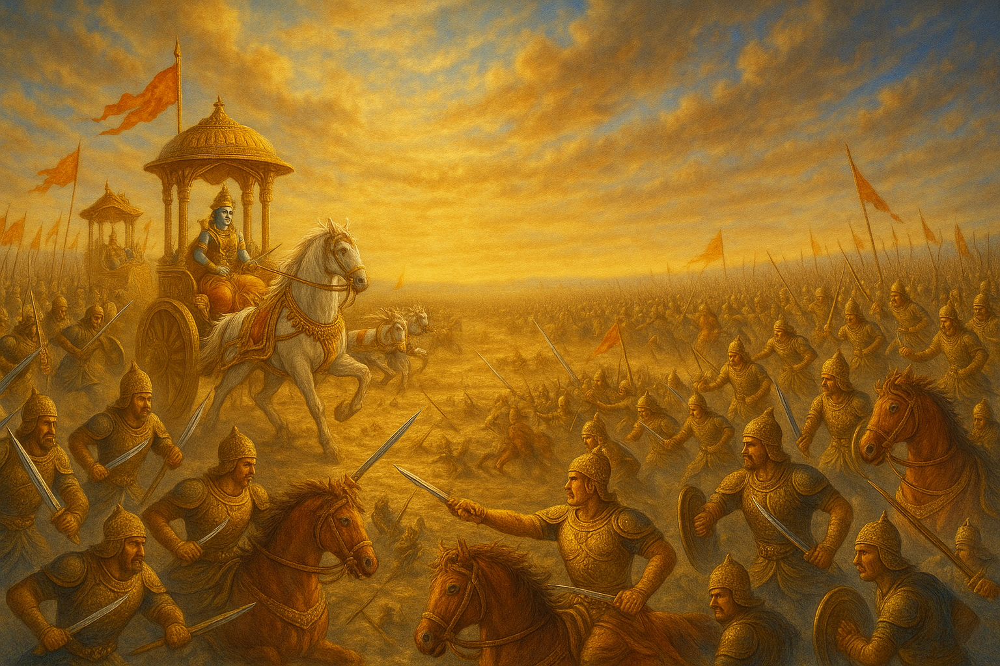
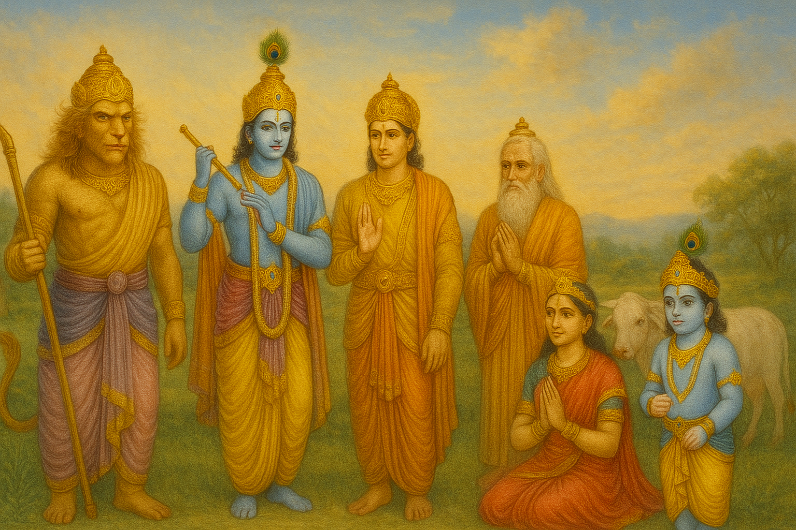

Bhagavad Gita - Chapter 1: Arjuna Vishada Yoga
The Yoga of Arjuna's Despondency
Chapter Insights
Introduction

Depiction of the Kurukshetra battlefield, setting the stage for Arjuna's dilemma.
Chapter 1 of the Bhagavad Gita, known as Arjuna Vishada Yoga or the Yoga of Arjuna's Despondency, sets the stage for the entire text. It describes the battlefield of Kurukshetra, where Arjuna, a key warrior, faces a moral and emotional crisis as he confronts the prospect of fighting his own kin. Overwhelmed by grief and doubt, Arjuna seeks guidance from Lord Krishna, his charioteer, initiating the profound spiritual dialogue that follows. This chapter highlights the human struggle with duty, attachment, and ethical dilemmas, making it relatable for anyone facing difficult decisions.

Arjuna receiving guidance from Lord Krishna on the battlefield.
By presenting Arjuna’s vulnerability, Chapter 1 underscores the importance of seeking wisdom in times of crisis, a timeless lesson for navigating personal and professional conflicts in the modern world.
Historical and Philosophical Context
Ancient Vedic scriptures influencing the philosophical context of the Gita.
Rooted in the epic Mahabharata, Chapter 1 introduces the moral and philosophical tensions of the Kurukshetra war. Arjuna’s despondency reflects the Vedic concept of dharma (duty) and its conflicts with personal attachments. The chapter draws on Upanishadic ideas of self and duty, setting the stage for Krishna’s later teachings on Karma Yoga and detachment, which align with both Vedic and later Bhakti traditions.
Key Themes

Symbolizing Arjuna’s moral dilemma between duty and compassion.
Key themes include:
- Moral Dilemma: Arjuna’s conflict between duty as a warrior and his emotional ties to family.
- Despondency: The psychological turmoil of facing difficult choices, universal to human experience.
- Role of Guidance: The importance of seeking a higher perspective, embodied by Krishna as the guide.
- Dharma: The tension between personal desires and societal obligations.
- Human Vulnerability: Arjuna’s emotional struggle highlights the universality of doubt and fear.
Krishna offering wisdom to Arjuna, a central theme of guidance.
Psychological Insights
Arjuna’s emotional turmoil, reflecting universal human struggles.
Arjuna’s despondency (1.28-29) mirrors modern experiences of anxiety and moral conflict. His physical symptoms—trembling and despair—resonate with psychological stress responses. Krishna’s role as a guide parallels modern therapeutic practices, emphasizing the value of seeking counsel to navigate emotional crises.
Cross-Cultural Relevance
Ethical dilemmas resonating across global philosophical traditions.
Arjuna’s struggle with duty versus compassion finds parallels in ethical dilemmas across cultures, such as the Confucian emphasis on duty or the Stoic focus on rational decision-making. The chapter’s exploration of vulnerability aligns with Buddhist teachings on suffering, making it universally relevant for addressing human conflict.
Philosophical Debates
Depicting philosophical debates on duty and ethics.
Chapter 1 raises questions about the nature of duty and the ethics of war. Arjuna’s hesitation to fight (1.31) sparks debates on non-violence versus necessary action, influencing philosophical discussions on dharma, karma, and moral responsibility in both Eastern and Western traditions.
Relevance Today
Applying Gita’s wisdom to modern ethical challenges.
In 2025, Chapter 1 resonates with individuals facing ethical dilemmas in professional, social, or personal contexts. Its emphasis on seeking guidance and confronting inner conflict offers practical wisdom for decision-making in a complex world, encouraging mindfulness and clarity in challenging situations.
Commentators’ Perspectives
Adi Shankaracharya (8th Century)
Adi Shankaracharya, proponent of Advaita Vedanta.
Shankaracharya views Arjuna’s despondency as an opportunity for spiritual inquiry, emphasizing that his doubts lead to the revelation of Advaita Vedanta’s non-dual truth in later chapters.
Ramanujacharya (11th Century)
Ramanujacharya, advocate of Vishishtadvaita.
Ramanujacharya interprets Arjuna’s crisis as a call for surrender to Krishna, highlighting the Bhakti path that emerges as a solution to his emotional turmoil.
Mahatma Gandhi (20th Century)
Mahatma Gandhi, inspired by the Gita’s teachings.
Gandhi saw Chapter 1 as a metaphor for inner conflict, using Arjuna’s struggle to advocate non-violence and self-discipline in his fight for justice.
Ethical Dilemmas and Resolutions
Arjuna’s Conflict
Arjuna faces the dilemma of fighting his relatives, questioning the morality of war (1.31-35). Krishna’s presence as a guide sets the stage for resolving this through teachings on duty and detachment in subsequent chapters.
Modern Applications
Applying Arjuna’s dilemma to modern ethical challenges.
Chapter 1’s themes apply to modern ethical challenges, such as workplace conflicts or family disputes. Seeking wise counsel and reflecting on higher principles can guide individuals toward balanced decisions.
Meditation and Practice
Contemplative Practice
Meditating on Arjuna’s struggle for inner clarity.
Reflect on Arjuna’s vulnerability (1.29) to cultivate empathy for personal struggles. Meditate on the concept of dharma to align actions with higher purpose.
Mindfulness Practice
Practicing mindfulness to navigate inner conflicts.
Practice mindfulness to observe inner conflicts without judgment, using Krishna’s guidance as inspiration for seeking clarity and resilience.
Cultural Impact
Literature and Arts
Traditional artwork depicting Krishna and Arjuna in dialogue.
Chapter 1 has inspired countless depictions in Indian art, literature, and theater, portraying Arjuna’s emotional struggle and Krishna’s divine guidance in sculptures, paintings, and modern media.
Global Influence
The Gita’s influence on global philosophy and ethics.
The chapter’s themes of moral conflict and guidance have influenced global literature and philosophy, shaping discussions on ethics and leadership in various spiritual traditions.
Shlokas
Sanskrit shlokas from the Bhagavad Gita.
Below is a selection of key shlokas from Chapter 1, presented in Sanskrit with Hindi and English translations, accompanied by commentaries to highlight their significance.
Shloka 1.1
धृतराष्ट्र उवाच
धर्मक्षेत्रे कुरुक्षेत्रे समवेतायुयुत्सवः।
मामकाः पाण्डवाश्चैव किमकुर्वत सञ्जय।।
धृतराष्ट्र बोले: हे संजय! धर्मक्षेत्र कुरुक्षेत्र में युद्ध करने की इच्छा से एकत्रित हुए मेरे और पाण्डवों के पुत्रों ने क्या किया?
Dhritarashtra said: O Sanjaya, what did my sons and the sons of Pandu do, assembled on the sacred field of Kurukshetra, eager to fight?
Shloka 1.20
अथ व्यवस्थितान् दृष्ट्वा धार्तराष्ट्रान् कपिध्वजः।
प्रवृत्ते शस्त्रसम्पाते धनुरुद्यम्य पाण्डवः।।
उस समय, धृतराष्ट्र के पुत्रों को युद्ध के लिए तैयार देखकर, हनुमान ध्वज वाला पाण्डव अर्जुन धनुष उठाकर बोला।
Then, seeing the sons of Dhritarashtra arrayed, with weapons ready, Arjuna, whose banner bears Hanuman, lifted his bow and spoke.
Commentary: Arjuna’s preparation for battle marks the onset of his moral crisis, setting the stage for his dialogue with Krishna.
Shloka 1.28
दृष्ट्वेमं स्वजनं कृष्ण युयुत्सुं समुपस्थितम्।
सीदन्ति मम गात्राणि मुखं च परिशुष्यति।।
हे कृष्ण! युद्ध के लिए तैयार अपने इन स्वजनों को देखकर मेरे अंग शिथिल हो रहे हैं और मेरा मुख सूख रहा है।
O Krishna, seeing my kinsmen ready to fight, my limbs falter, and my mouth is parched.
Commentary: Arjuna’s physical and emotional distress reveals the depth of his moral conflict, a universal human experience.
Shloka 1.31
न च श्रेयोऽनुपश्यामि हत्वा स्वजनमाहवे।
न काङ्क्षे विजयं कृष्ण न च राज्यं सुखानि च।।
हे कृष्ण! मैं अपने स्वजनों को मारकर कोई कल्याण नहीं देखता, न मैं विजय चाहता हूँ, न राज्य, न सुख।
O Krishna, I see no good in killing my kinsmen in battle, nor do I desire victory, kingdom, or pleasures.
Commentary: Arjuna’s rejection of worldly gains highlights his ethical struggle, questioning the value of war.
Shloka 1.46
यदि मामप्रतीकारमशस्त्रं शस्त्रपाणयः।
धार्तराष्ट्रा रणे हन्युस्तन्मे क्षेमतरं भवेत्।।
यदि धृतराष्ट्र के शस्त्रधारी पुत्र मुझे युद्ध में, निहत्थे और प्रतिकार न करने वाले को मार दें, तो मेरे लिए यह अधिक कल्याणकारी होगा।
If the armed sons of Dhritarashtra slay me in battle, unarmed and unresisting, that would be better for me.
Commentary: Arjuna’s willingness to die rather than fight reflects his deep moral crisis, setting the stage for Krishna’s guidance.
Commentary: Dhritarashtra’s question sets the narrative, highlighting the tension and moral stakes of the impending war.